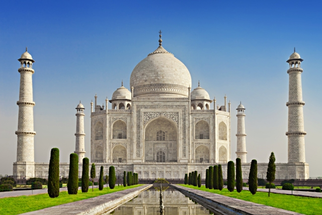
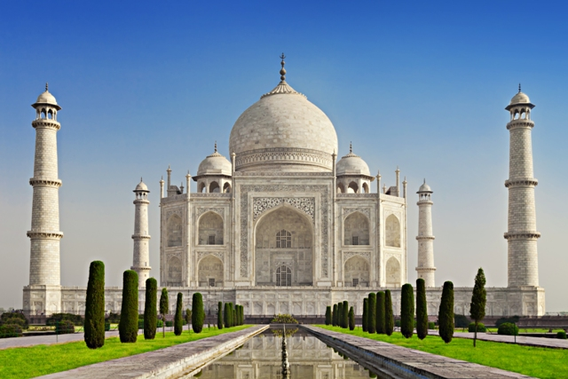
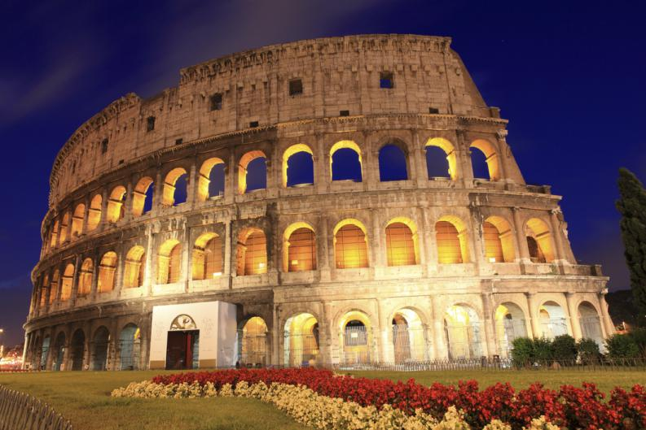
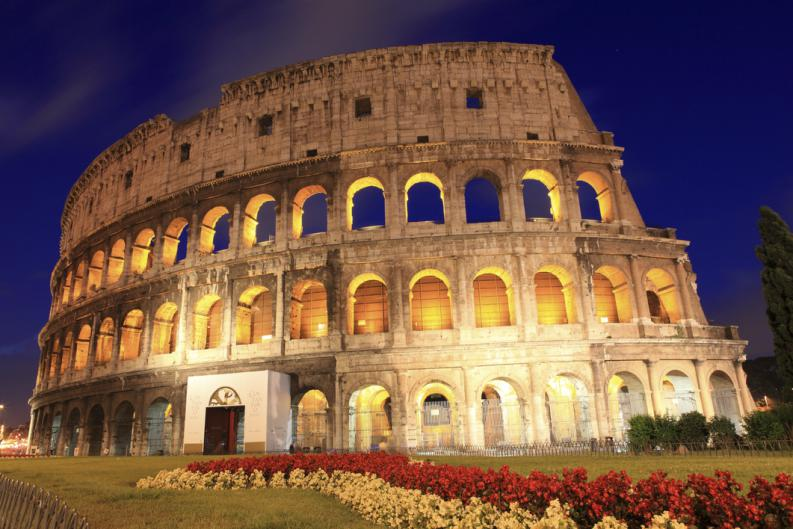

Palacio de Bellas Artes
El palacio de bellas artes es uno de los edificios mas representativos de
la ciudad de Mexico ya que su arquitectura recuerda la epoca barroca.
Fue construido en el mandato de Porfirio Diaz en el comienzo del siglo de la
ilustracion

Monumento a la Revolucion
El monumento a la Revolucion fue construido para conmemorar la revolucion
mexicana llevada a cabo en 1910 es de una belleza arquitectonica singular
teniendo semejanzas con el arco del triunfo ubicado en Francia

Acuario Inbursa
El acuario inbursa es un lugar de entretenimiento familiar ubicado en Polanco dentro de la ciudad de México, donde podras apreciar las especies marinas te y conocer informacion sobre las mismas, por lo que, ademas de ser divertido aprendes.
La feria de Chapultepec
La feria de chapultepec es uno de los lugares de diversion para niños mas visitados en Mexico ya que ademas de contar con un parque de diversione y juegos mecanicos en los alrededores tambien se encuentra un zoologico y un lago artificial con canoas para recorrerlo.


Casa de los titeres
El Centro Cultural: La Titería, casa de las marionetas es un espacio donde las artes se integrarán con el títere para desarrollar programas artísticos, didácticos y sociales para niños, jóvenes. Es un lugar de encuentro para las familias donde podrán ver y explorar las artes escénicas (teatro, títeres, danza, cine), exposiciones (artes plásticas, fotografía, cine), proyecciones (cine, animaciones y títeres), en diversos programas y proyectos con una programación anual y constante.
Museo Universum
Universum Universum, el Museo de las Ciencias de la Universidad Nacional Autónoma de México es pionero -en su tipo- en Latinoamérica. En un entorno de más de10 hectáreas de zona de Reserva ecológica del Pedregal de San Ángel y áreas jardinadas, Universum cuenta con 25,000 m2 construídos de los cuales 12,000 m2 están destinados a exposiciones permanentes.


Piramides
Las pirámides mexicanas poseen un peculiar halo de misterio que pocas construcciones en el mundo tienen. Las pirámides son un culto universal a lo esencial de la vida, gracias a la ayuda de nuestros arqueólogos, aún podemos visitar algunas de ellas y descubrir que, tal vez, su fuerza enérgica sigue siendo impresionante

Museo del niño
Es un museo interactivo que tiene actividades muy divertidas enfocadas al conocimiento, desde la experiencia de los doctores dentro de un quirofano hasta un laboratorio de ideas donde podras darle vida a un robot con maquinas simples

Museo de la tolerancia
El museo de la memoria y tolerancia trata temas de violencia y guerras para evitar que se repitan tragedias humanas provocadas por odio y discriminacion un espacio para crear conciencia.

Angel de la independencia
Inaugurado en 1910 por Don Porfirio Díaz, el monumento a la Independencia es una marca y símbolo citadino, la victoria alada que remata la columna fue adoptada por los habitantes de la ciudad como su ángel protector. Tal vez por ello, al cobijo de sus alas se dan variadas manifestaciones ciudadanas, tanto de júbilo como de descontento.

Museo de cera
Tiene miles de figuras de famosos ademas de contar con varios niveles, en el sotano se encuentra el area dedicada al terror.

Zocalo
En la plancha del zocalo se llevan acabo varios eventos culturales entre ellos la feria de las culturas amigas que es un festival en el que participan varios paises
 



 
